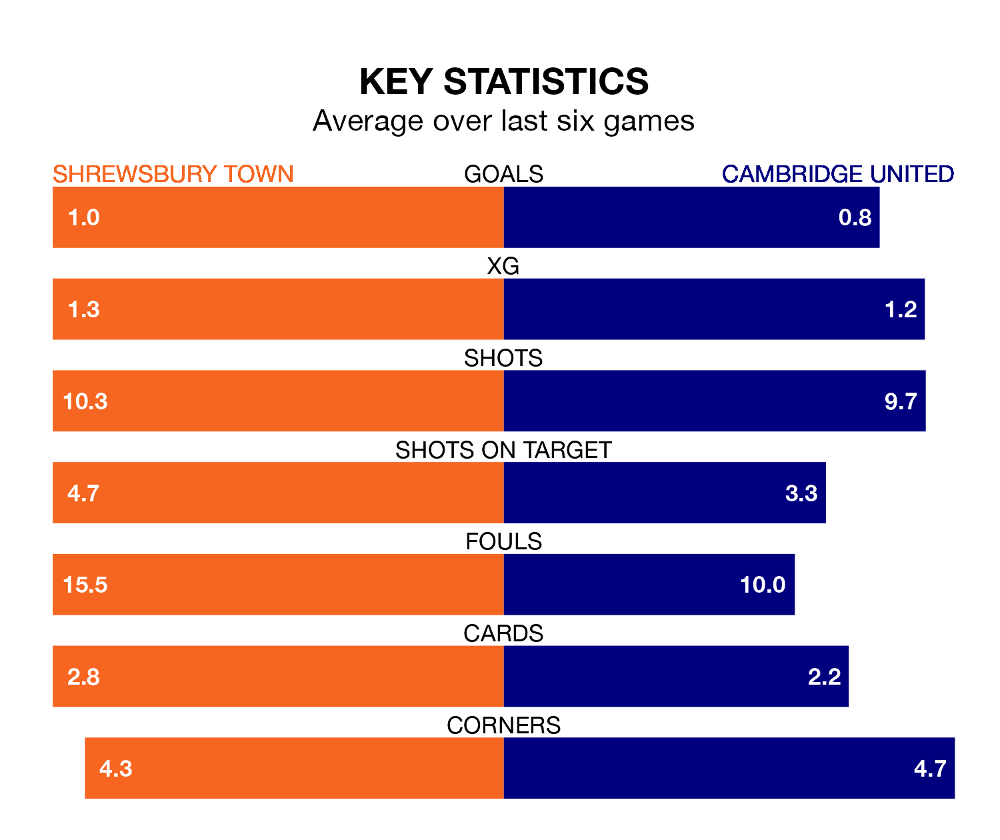

Shrewsbury Town host Cambridge United on Saturday at the Croud Meadow in EFL League One.
In their last league match, on January 27, Shrewsbury beat Northampton Town 2-0 away, with goals from Cheyenne Dunkley and Daniel Udoh.
Cambridge drew, 0-0 at home against Burton Albion.
In the last 10 years, Shrewsbury and Cambridge have played each other on seven occasions. Shrewsbury won three of them, Cambridge two, and they drew twice.
On average, the Shrews scored 1.9 goals and Cambridge 0.9 in those matches.
Their last meeting was on October 14, when they played out a 1-1 draw.
Shrewsbury are in disappointing form in EFL League One, with two wins and four losses from their last six games.
With two wins and two draws over that period, Cambridge's form is slightly better – they have taken eight points from 18, compared to Town's six.
United are 16th in the table after 27 games, of which they have won eight and drawn eight, earning 32 points.
The Shrews are two places ahead of the visitors in 14th, with 10 wins and three draws putting them on 33 points.
With 20 goals in 29 games so far this season, the home team are the league's joint-second-lowest scorers with 0.7 goals per game. And they are conceding at an average rate, letting in 39 goals at a rate of 1.3 per game.
Cambridge are also below average scorers, with 0.9 goals per game, compared to a league average of 1.3. They have conceded 1.2 goals per game.
Updated: 10:03 (UTC), 30/01/24